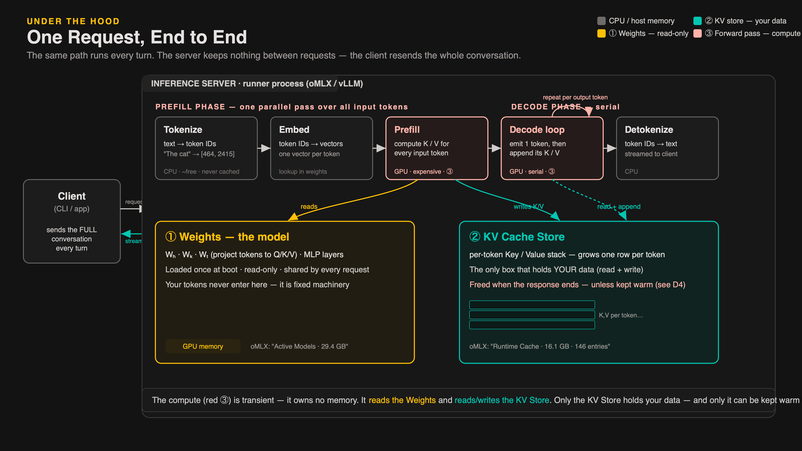
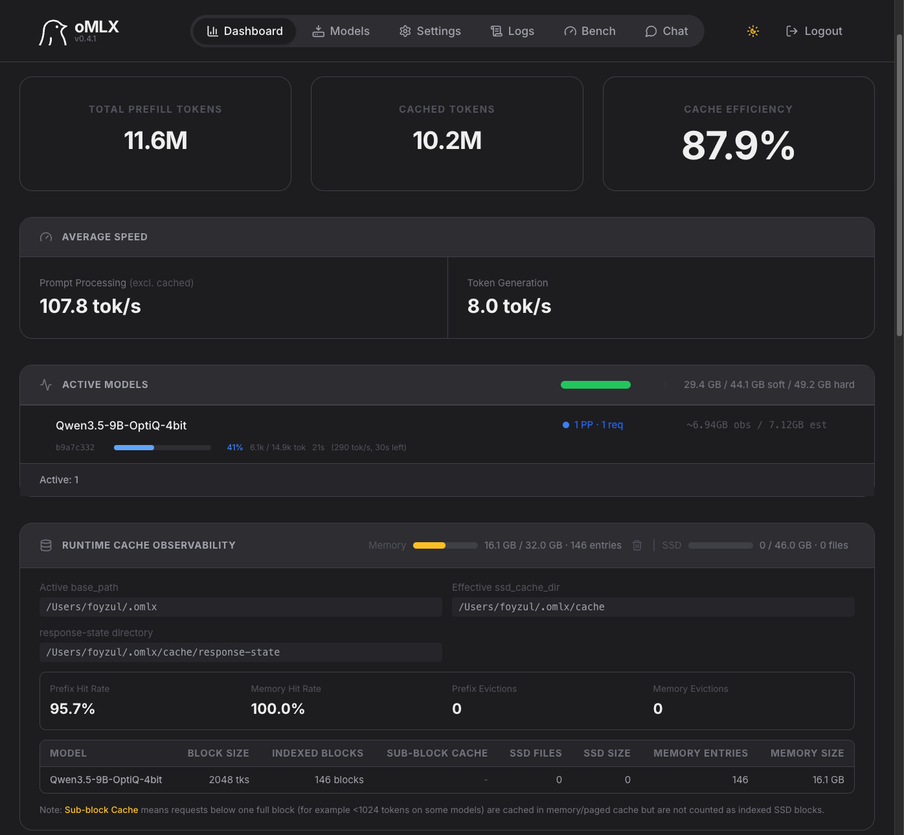
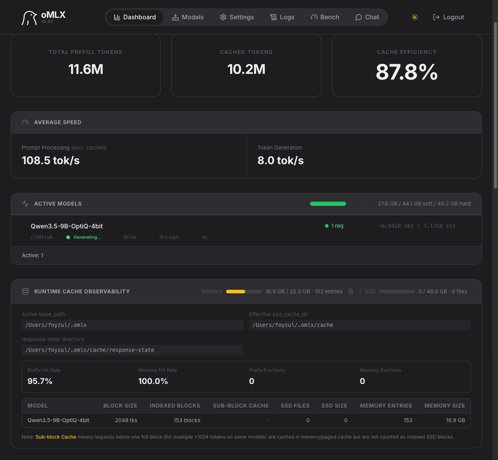
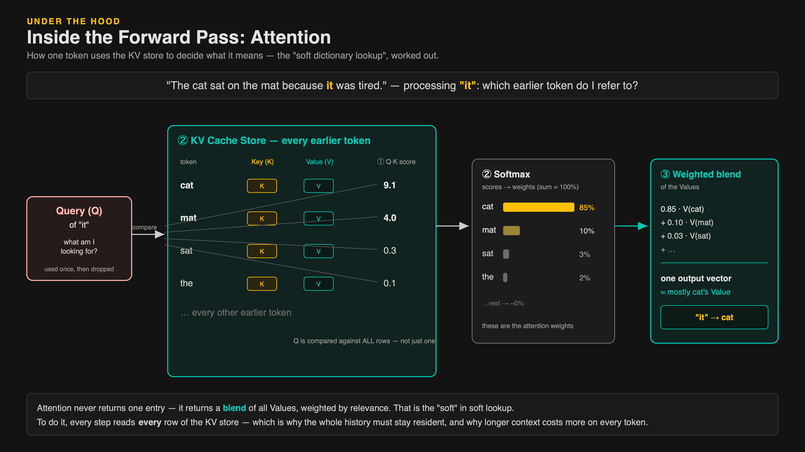
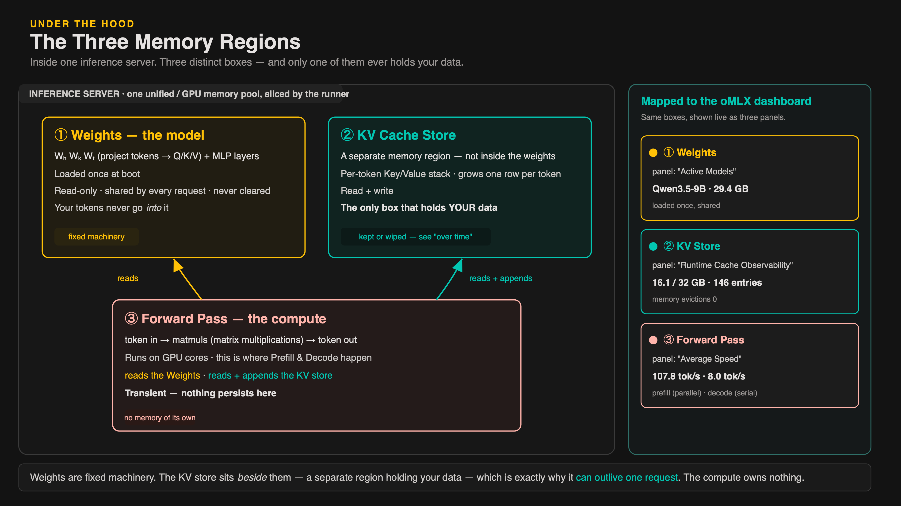
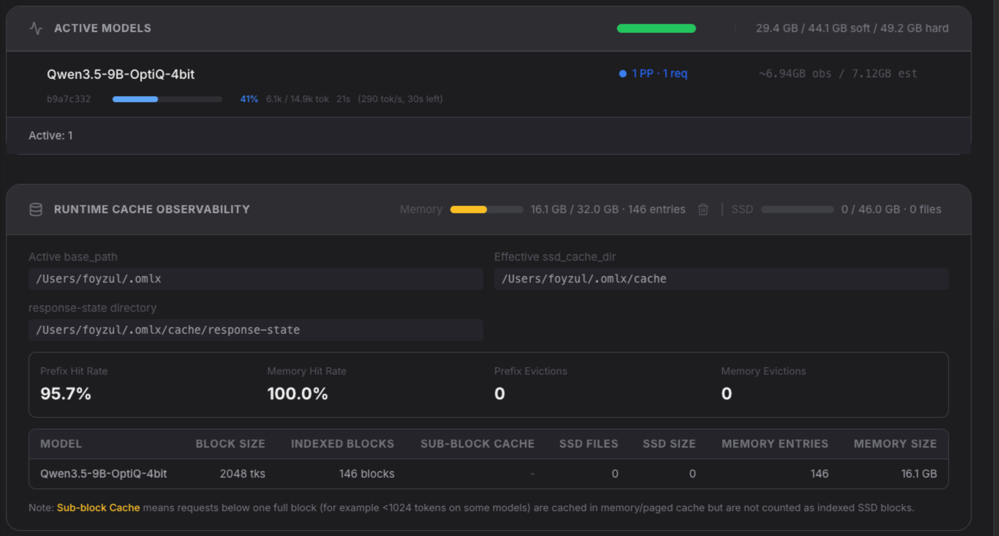
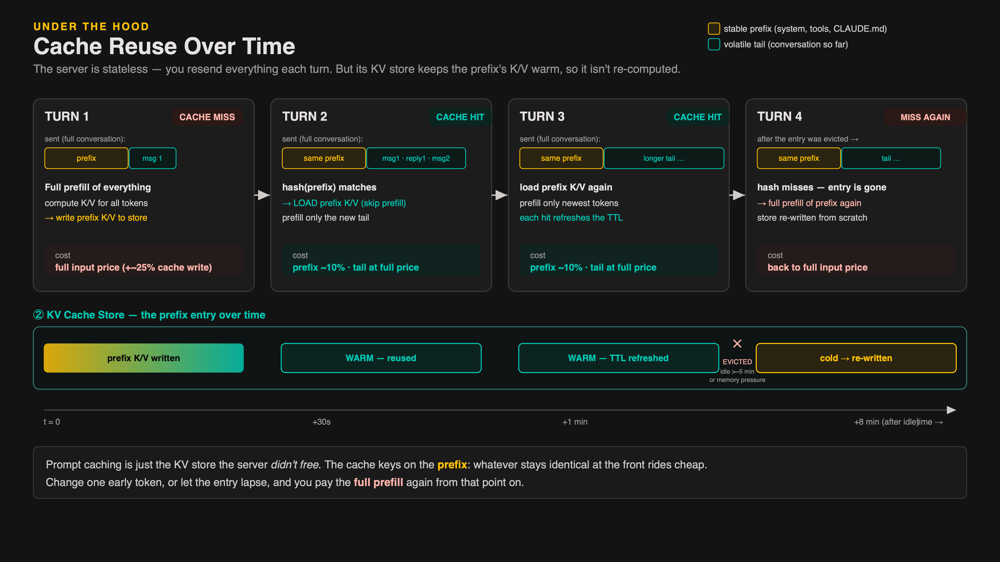
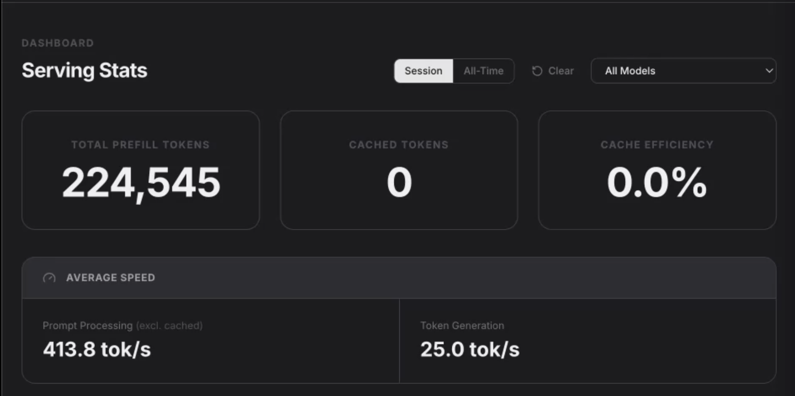
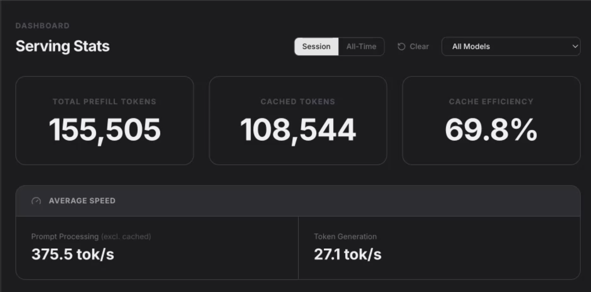

A practical foundation for working with AI coding agents — the engineering discipline, Claude Code, reusable skills, and the systems knowledge behind tokens and caching.
AI coding agents make development 10× faster. Without process, that speed produces broken code, lost context, and runaway cost.
Four modules move from the discipline to the machinery — so you can use coding agents deliberately, not by instinct.
Problem “Vibe coding” — asking AI to write code without process — produces unmaintainable, untested code that breaks in production.
| Persona | Their Problem | What They Gain |
|---|---|---|
| Software Engineers | AI writes code but they can't maintain it. | Disciplined framework + quality gates. |
| Team Leads | Team uses AI inconsistently. | Repeatable standards + review process. |
| Senior Developers | Need the full picture, not just code generation. | Architecture + context + optimization. |
| Architects & Leads | No standards exist for AI-assisted work. | Design patterns others can follow. |
Problem One-shot prompts fail on complex tasks. Every LLM call has limited context, no planning, and no verification.
Concept An Agent is an intelligent orchestrator that decomposes work and decides what to do next.
The LLM is the brain. The agent is the body.
From single-intent assistants to purpose-based orchestrators that coordinate parallel subagents.
Each phase has one owner and produces one deliverable. No phase is optional.
| # | Phase | Owner | Deliverable |
|---|---|---|---|
| 1 | Requirement Engineering | You | REQ document — what to build |
| 2 | System Architecture | You + Claude | ARCH doc — data models, APIs, modules |
| 3 | Task Generation | Claude | Task list with tests + scope + REQ trace |
| 4 | TDD Implementation | Claude | Working code + passing tests |
| 5 | Review & Merge | You + Claude | Approved PR — 16 parallel checks |
The same 5-phase pipeline — different entry points. The discipline never changes.
| Scenario | REQ | ARCH | TASKS | TDD | REVIEW | Note |
|---|---|---|---|---|---|---|
| Greenfield | 1 | 2 | 3 | 4 | 5 | Blank slate — all 5 phases. |
| New Feature | — | 2 | 3 | 4 | 5 | System exists — skip REQ. |
| Bugfix | RCA | — | 3 | 4 | 5 | Root-cause analysis first — understand why. |
Problem The 5-phase framework needs a tool — one that reads codebases, runs tests, and loads skills.
Concept Claude Code is Anthropic's official CLI — your terminal interface to agentic engineering.
Problem Skills, hooks, settings, rules — scattered. Without the map, you waste hours searching.
Demo What actually lives in your global config directory — the pieces you configure and invoke directly.
Demo Directories Claude manages itself — memory, audit trails, costs, and custom providers.
Demo Every project you've ever worked on gets its own directory — named after the path on your machine.
Demo Claude Code's global runtime state — usage history, per-project snapshots, and last-session metrics.
Concept Every number visible the moment Claude Code opens — and every one of them is customizable.
Problem Every session starts from zero. You re-explain conventions — every single time.
Solution Skills = markdown in .claude/skills/, loaded on demand via slash command.
Skills aren't only files you write — they ship with the CLI, arrive via plugins, or live in your repo. Same anatomy, three sources.
You don't have to type /init to trigger the init skill — ask in plain language and Claude's LLM matching does the rest.
Two read-only agents shipped inside Claude Code — and the targets your skills can delegate to via context: fork.
A read-only skill that analyzes your codebase and surfaces the top 1–2 automations across all five extension points — with why, not just what.
| Hooks | Auto-actions on tool events — format, lint, block edits |
| Subagents | Specialized reviewers that run in parallel |
| Skills | Packaged workflows, invoked by user or Claude |
| Plugins | Collections of skills, installed once |
| MCP Servers | External integrations — DB, APIs, browser, docs |
The recommender suggested a release-notes skill for claude-lens. We built it on the spot and ran it — here's what happened.
Three versions of the same commit skill — each one moves more work out of the LLM and into bash. The tokens follow.
Prefix a line with ! — the command runs before Claude reads the skill; its output replaces the line. Right for metadata that configures the skill. Wrong for data the skill will process.
| name+version | 1 line · brands the output · changes per project |
| date | 1 token · entry heading · can't be hardcoded |
| release-config | tiny JSON · which sections to include · per-project |
Problem Skills can be ignored or bloated. Four patterns fix accuracy and tokens.
Four rules that determine whether Claude follows your process — or improvises around it.
The module covered the essentials. These surfaces are worth exploring on your own — each is a keyword in the official Claude Code docs.
You've seen what to build — skills, the .claude directory, the workflow. Before we build, we open the machine. Tokens, the context window, the request loop, and caching — the four things that explain why agents forget, why long sessions get expensive, and why structure beats memory. After this, nothing in the build is magic.
Before the model reads anything, your text is chopped into tokens. The model never sees letters or words — only tokens.
The context window is the model's working memory for one request — finite, about 200K tokens for Sonnet. And most of it is loaded before you type a single word.
Every message, Claude Code packages the entire context into one payload and ships it. The server holds nothing between calls. The model is a pure function of the text you send.
The model can't run anything. It returns text, or a request to use a tool. Claude Code runs the tool, appends the result, and sends the whole thing back. Repeat.
Problem Every turn re-sends a growing context. You pay input tokens for the whole window — again and again. Twenty turns deep, you're re-billing the same 50K tokens twenty times.

When you hit Enter, the server doesn't just "read and reply." Three stages run in sequence — and the middle one is where almost all the cost lives.
Same machine — a Mac Mini M4 Pro running a local LLM via oMLX. Two screenshots, seconds apart. First the prefill pipeline ingests the prompt. Then generation begins.


Solution 1 To emit each new token, attention must look at the Key and Value of every earlier token. So compute each token's K/V once, store them, and reuse — instead of re-deriving the whole history at every step.
Previously we called attention a soft dictionary lookup. Here's the actual mechanic — three steps that turn the current token's Query into one blended answer. Worked on a real sentence.

The cache is not inside the model's weights. Inside the inference server (the software that runs the model and serves responses) there are three distinct regions — and your tokens' K/V only ever land in one of them.

The three boxes aren't an abstraction — the inference server exposes each one as its own panel. Same oMLX dashboard running Qwen locally on a Mac Mini. Each panel is one box.

Live walkthrough — oMLX inference server running Gemma-4, watching the three memory boxes in real time.
Back to the three stages from 21E1. Two of them get confused — and only one is ever cached. The trap: thinking "tokens are already computed, so what's left to cache?"
Solution 2 Prompt caching is the same KV store — the server just chooses not to free it. It keeps the prefix's K/V alive across requests, so the next turn loads them instead of re-prefilling. You still send everything every turn; the server stays stateless.

Prompt caching works because your context has a predictable structure. The front never changes; only the tail does — and knowing this changes where you should write your instructions.
I ran the same prompt through Claude Code with cache disabled. Left: oMLX shows the serving mechanics. Right: Claude Code shows what you pay. Every turn recomputed from scratch.

Same prompt. Same model. Same machine. The only difference: cache is enabled. Watch the prefix stay warm.

Everything so far was the machine. Here's how you work it without bleeding tokens — habits that fall straight out of how context and caching actually behave.
You now have the framework, the Claude Code surface, the skill patterns, and the systems model needed to work with agents deliberately.